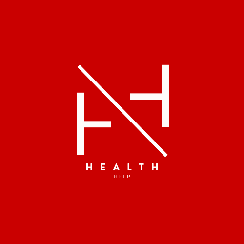

HealthHelp geoAI
☰
Layer Controls
Thematic Storyboard
Year:
2025
Maternal/Newborn/Child Death Rate
HIV/AIDS-related Death Rate
Health Facilities Count
High Poverty+Population+Maternal/Newborn/Child Death Rate
High Poverty+Population+HIV/AIDS-related Death Rate
Basemap
Upload / Analyze
Upload Shapefile (.zip):
Upload GeoJSON:
Upload Other Geospatial Files:
Save Data Locally
Clear Map
Uploaded data stays until you clear the map.
Click anywhere on the map to show attributes.